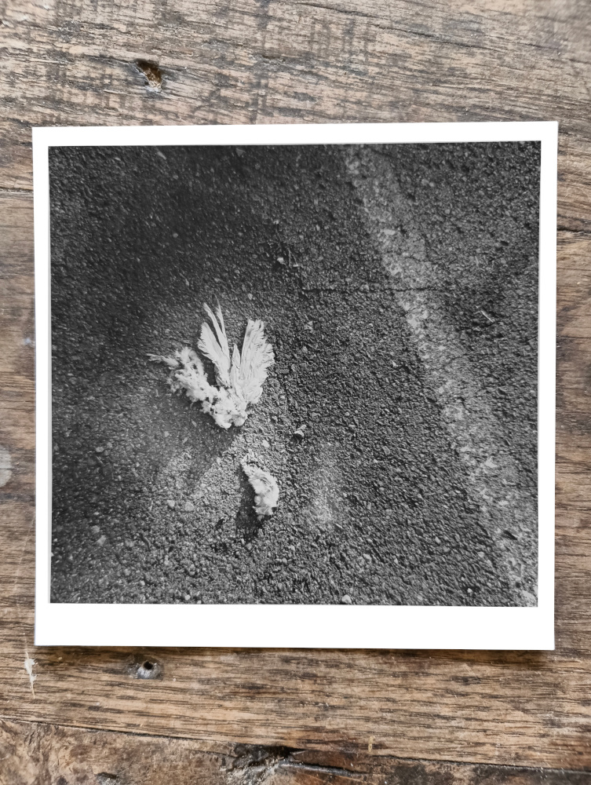
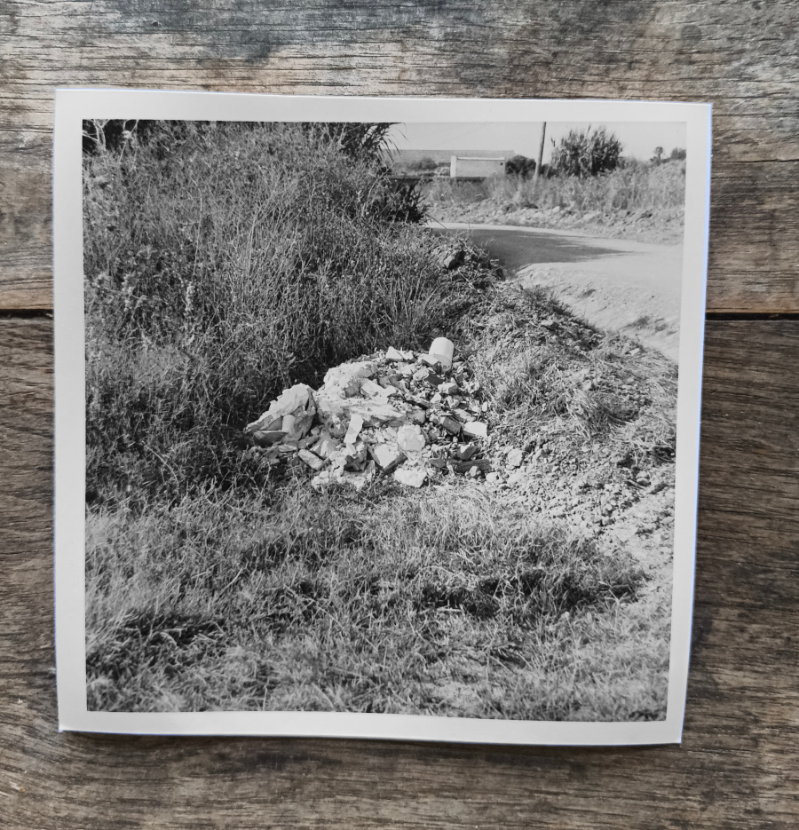

I go out with my camera looking for a picture, half the time I come back not having taken one shot, the other half I either took a shot in the last light out of desperation, took the last shot a minute before something worth shooting showed up, missed an opportunity because my mind was elsewhere, or took a really good shot, but forgot to set the aperture, or left the cap on, or forgot to turn the film holder around, or... When I finally develop I might find that both negatives in a film holder were loaded on the same side, or the fixer was not good anymore, or I forgot to account for the film being pushed or pulled by a stop, or the negative is solid white or solid black. Seems like there's an infinite number of errors to commit as I keep committing new ones.
The Graflex series B reflexis a wooden box 20 by 18 by 15cm, weighing two and half kilos. I carry it in my rucksack, some level of commitment is required to take a shot. From this perspective, my photography is all about constraints, zero freedom, it is working against where photography was going from the onset. Funny that this camera I use was marketed for taking family portraits for its simplicity... but that was in 1925.

To take a photo I take the camera out of the bag, place the film holder at the back, open the top cover and pull out the viewer, pop open the lens door by rolling out the lens on its rail, measure the light, find the speed that I chose in the table that is printed in a plate on the folding viewer, read the combination of tension and slit size, get the mirror out of the way by pulling a lever, apply the combination to the winding knobs on the side of the box, adjust the aperture on the lens to the one selected, look down through the viewer, focus with the knob that slides the lens rail, pull the dark slide that is facing the camera body, look through the viewer with finger on the trigger, pull the trigger - clank! The mirror flaps as the cloth focal plane shutter rolls, slide the dark slide back in place and flip the film holder for the next shot.
To be honest most of the time I really want to get rid of this camera, I get one good shot out of eight, the bad shots are not just bad, they are wrong, but that one good shot can sometimes be special enough for me to give the hundred years old camera another chance.
